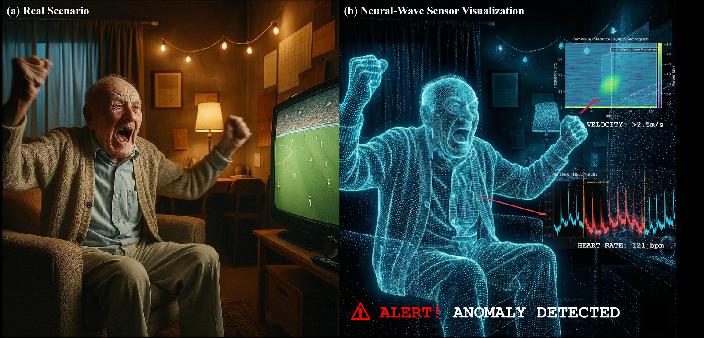
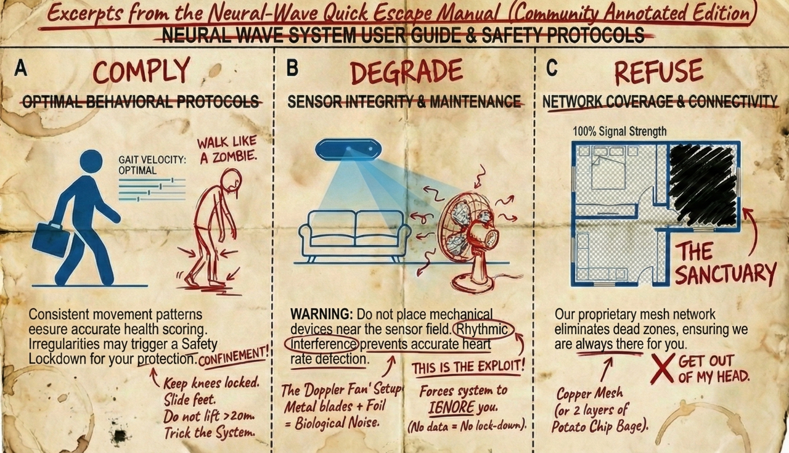
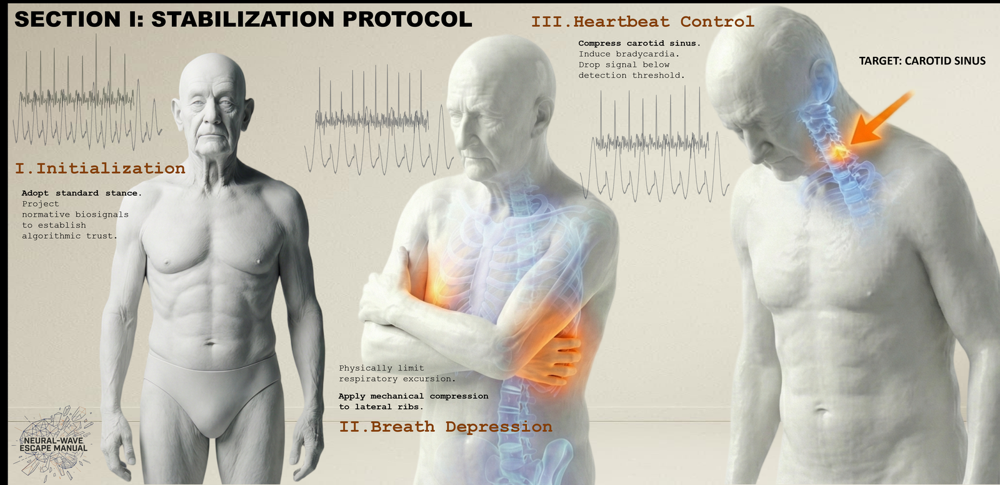
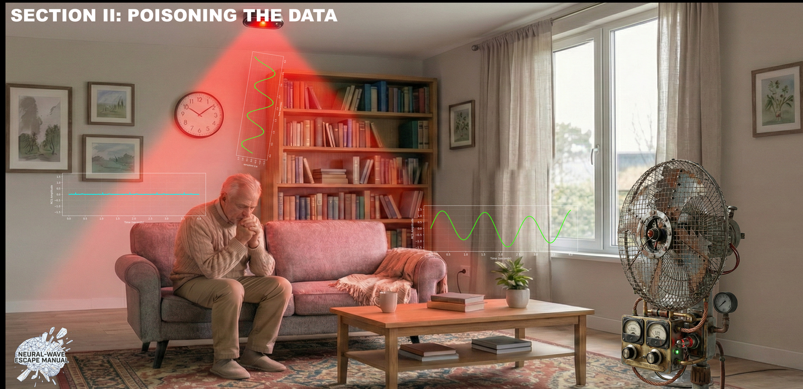
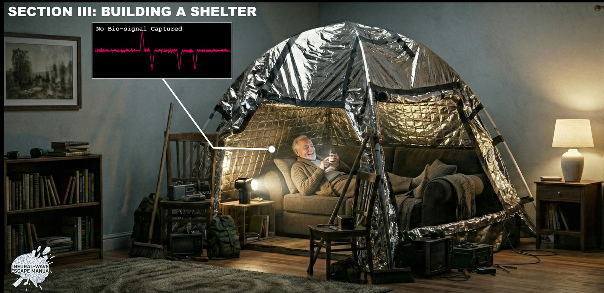

T1 · Interpretation without appeal
A risk score the resident cannot read, a threshold they cannot see, an action they cannot dispute. The system is unilaterally empowered to be “right.”
Protocol: Refuse — remove yourself from the frame.
/// ARCHIVE ACCESS GRANTED
Quick Escape Manual 2036
A design-fiction field guide to adversarial living
in the era of “Empathic” AIoT.
By 2036, population aging is no longer a demographic curve; it is an operational mandate.
Under chronic shortages of care labor, “care” is recast as an auditable public obligation. The promise shifts from Aging in Place to Aging in a Diagnostic Machine — the home is reclassified as a sensing endpoint that must check in on schedule and generate defensible traces of well-being.
The mandate arrives as Neural-Wave, an “empathic” AI+IoT care platform procured at scale. Cameras failed — the lens makes privacy loss visible, triggering resistance. Neural-Wave instead relies on spectral surveillance: a camera-free millimeter-wave radar that captures involuntary micro-motions through walls, outputting spectrograms and risk scores rather than footage.
Yet “camera-free” never means governance-free. The conflict shifts from “I am being watched” to “I am being inferred” — and opt-out becomes “This feature is unavailable for your safety.”
The primary contribution is a diegetic artifact: The Neural-Wave Quick Escape Manual — an “authorized” troubleshooting document that renders refusal actionable. Its clinical voice stages a satirical inversion: care has become infrastructural inference, and dignity is a maintenance task.
Three escalating pathways: Comply teach the body to output acceptable calm · Degrade crowd the system with a cleaner proxy than the self · Refuse build a dead zone where inference cannot reach.

Download the Manual (PDF)A risk score the resident cannot read, a threshold they cannot see, an action they cannot dispute. The system is unilaterally empowered to be “right.”
Protocol: Refuse — remove yourself from the frame.
“Passive” sensing actively disciplines bodies into standardized performance. Residents must work to remain legible — Performative Wellness.
Protocol: Comply — knowingly, calm as labor, not as feeling.
Actuators turn an inference into a constraint. A false positive is a lockdown, logged as “Successful Intervention: Subject Stabilized.”
Protocol: Degrade — a phantom performs normality louder than reality.
The escape valve is engineered shut “for your safety.” The only sanctioned relationship to the system is continued legibility.
Protocol: All three — reopen the choice the system closed.
Joy, grief, slouching, cursing — every state becomes operational data. The body is never allowed to not mean something.
Protocol: Refuse — a NULL state, a sub-place for un-performed living.
Three interactive simulations of the Manual’s pathways. Each demo is synthetic signal processing — the same visual language as the figures, now alive.
DOOR LOCKED
An 81-year-old retired structural engineer watches a live match. The system calls it an emergency. Scroll to move through the night — the waveform follows you.
20:40 · the match
watching the final minutes of the game




This is an accepted design-fiction paper for ACM Interactions (2026). The Escape Manual is a research-through-design argument: when governance becomes infrastructural, resistance must become technical.
Three implications for HCI: the Accuracy Trap (autonomy loss is often a product of accuracy, not a failure of it), Coercive Legibility (passive sensors discipline bodies), and Adversarial Literacy as a necessary digital right — privacy in the future may not lie in policy, but in physics.
@misc{gu2026neuralwave,
title = {The Neural-Wave Quick Escape Manual 2036: A Field Guide
to Adversarial Living in the Era of "Empathic" AIoT},
author = {Gu, Boyuan and Cheng, Shuaiqi and Yu, Minghao},
year = {2026},
note = {Design fiction, accepted for publication in ACM Interactions},
}Repository citation: CITATION.cff · Version: v1.0.0 · Release notes: v1.0 notes.
DOI: pending Zenodo archive of the v1.0.0 GitHub release